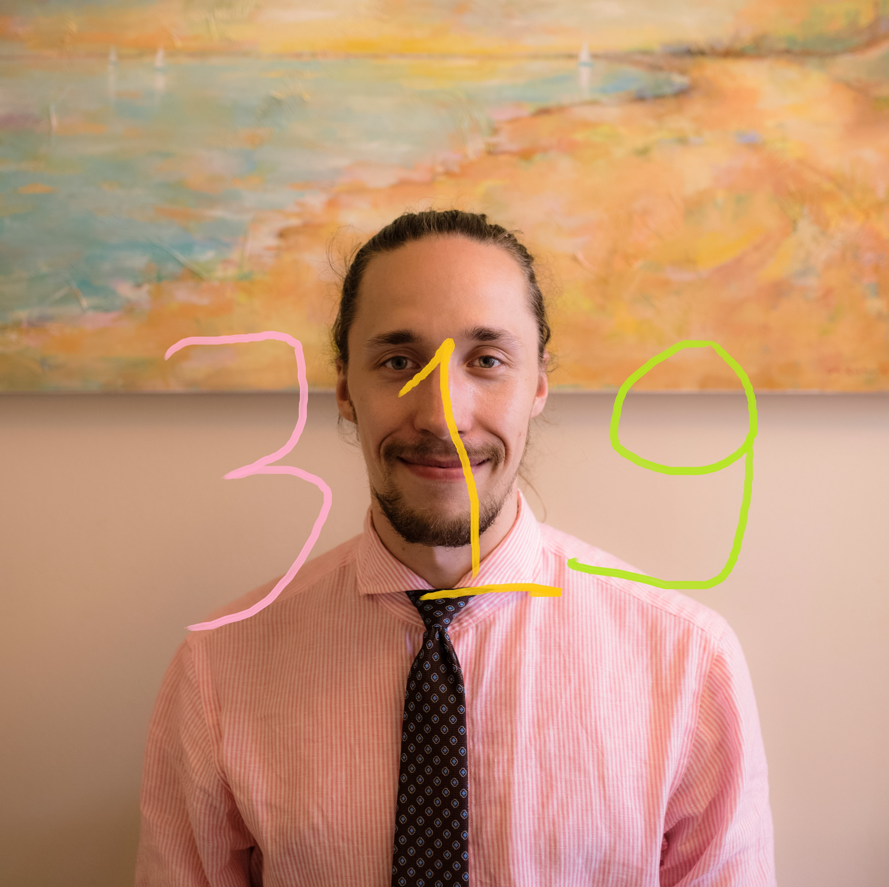

Helsingin yliopiston ylioppilaskunnan edustajistovaalit järjestetään 31.10.–2. 11.2018 ja 5.11.-7.11.2018. Tyyppiarvon politiikan toimitus kokosi tuttuun tapaan Moodin sähköpostilistan ja reservin tykkimiehen tasoisen tiedustelun kautta kaikki tilastomieliset ja -henkiset ehdokkaat sähköiseen paneeliin. Vuoden 2016 tapaan paneelissa keskityttiin olennaiseen ja mahdollisuus jaaritteluun eliminoitiin asettamalla yhteismerkkiraja vastauksille. Vuoden 2016 kuuden twiitin (840 merkin) rajaa jouduttiin arvioimaan uudestaan, koska Twitter vuonna 2017 kaksinkertaisti yhden twiitin maksimimerkkimäärän. Tänä vuonna kokonaismerkkimäärä asetettiin neljään twiittiin eli 1120 merkkiin, joka osoittautui ehkä liiankin riittäväksi.
Edarivaalipaneelin ehdokkaiden valintakriteerinä oli lähinnä jotenkin määriteltävissä oleva suhde tilastotieteeseen sekä annetuissa aikarajoissa pysyminen Tyyppiarvon toimitusta paremmin. Lopulta saimme kasaan neljän ehdokkaan vastaukset kolmesta eri edustajistoryhmästä. Ehdokkaille lähettiin seuraavat kysymykset:
- Kuka olet ja mikä on suhteesi tilastotieteeseen?
- Miksi tilastotieteilijän pitäisi äänestää edustajistovaaleissa?
- Miksi tilastotieteilijän pitäisi äänestää edustamaasi ryhmää?
- Miksi tilastotieteilijän pitäisi äänestää sinua?
- Jos koet, että merkkikiintiö ei tullut täyteen, voit kertoa NATO-kantasi ja sijoittaa itsesi tilastotieteen nelikenttään, jossa sijainti ilmaistaan kaksiulotteisena vektorina (x,y), siten että x-koordinaatti kuvaa sijoittumistasi asteikolla -3 (Bayesiläinen) <-> 3 (Frekventistinen) ja y-koordinaatti asteikolla -3 (R) <-> 3 (SPSS).
Ehdokkaat esitellään satunnaisessa järjestyksessä.
109 Lauri Olli Tarpila

- Tulevaisuuden tilastotielija nero, joka pitää tilastotiedettä ainoana tapana saada totuus selville. Pidän myös ilmastonmuutosta suurena uhkana, joka pitää pysäyttää yhteisvoimin.
- Jotta saamme hyvän edustajiston. Kun n(=äänestäjien määrä) kasvaa, niin satunnaisvaihtelu häviää ja saatu edustajisto kuvaa paremiin opiskelijapopulaatiota. Viime vaaleissa äänestysprosentti oli n. 33%.
- Jos pitää HYY:n Vihreiden arvoista ja tavasta toimia (Tässä linkki http://www.hyvi.org/hyyn-vihreiden-vaaliohjelma-2018/). Olemme myös vaaliliitossa Sitoutumattoman vasemmiston kanssa, joten heidänkin toimintaan kannattaa tutustua(tässä linkki https://sitvasfi.wordpress.com/vaaliohjelma-2018/).
- Minun kautta voi tilastotieteilijä saada äänensä kuuluviin, koska pyörin usein Survomossa. Tärkeimpinä tavoitteinani on parantaa HYY yhtymän vastuullista liiketoimintaa ja voimistaa yliopiston tapoja estää ilmastonmuutosta
- (2,
length(c("R","on","paras")))
[Toim. huom. Vastauksessa olevian hyperlinkkien merkkimäärä huomioitu kokonaismerkkimäärässä.]
480 Anna Holvio

- Olen ekan vuoden maisteriopiskelija datatieteessä ja taloustieteessä ja järjestökentän moniottelija. Suhteeni tilastotieteeseen on rakastava niin tieteenalaa kuin ainejärjestöämme kohtaan, ja tällä hetkellä toimin Moodissa puheenjohtajana. Olen (mielestäni) osaava ja innoissani minulle tärkeistä asioista.
- On tärkeää, että ylioppilaskunta on jäsentensä näköinen ja äänestäminen on helppo tapa vaikuttaa tähän. HYY esimerkiksi tekee tärkeää, jokaista koskettavaa edunvalvontatyötä sekä mahdollistaa opiskelijatoimintaa erilaisten tukien, tilojen ja koulutusten muodossa.
- Edustan Helsingin yliopiston ainejärjestöläisiä (HYAL). HYAL on puoluepoliittisesti sitoutumaton ryhmä, jonka kaiken toiminnan keskiössä on opiskelija. Toimijat ovat sitoutuneita ja todella tuntevat ylioppilaskuntansa.
- Äänestä kanssamoodilaista, niin myös pienempien ääni saadaan kuuluviin. Minulle tärkeitä asioita ovat esimerkiksi kokonaisvaltainen opiskelijoiden hyvinvointi, monipuolisten opiskelumahdollisuuksien tarjoaminen ja turvaaminen, tutkitun tiedon näkyminen päätöksenteossa sekä kestävä taloudenpito.
72 Juha Harviainen
- Hei! Olen Juha, ensimmäisen vuoden tietojenkäsittelytieteen opiskelija. Olen matematiikasta, tieteestä ja tekoälystä kiinnostunut tyyppi, ja siksi ymmärrän tilastotieteen tilastollisen merkitsevyyden.
- Edustajistovaalit ovat mahdollisuus vaikuttaa meidän kaikkien asioihin. HYY vastaa järjestötuista ja monista opiskelijapalveluista, ja jättämällä äänestämättä voi käydä niin, ettei edustajistossa ole ketään ajamassa juuri sun haluamia asioita. Edarivaaleissa yhdelläkin äänellä on merkitystä, koska viime vaaleissa eräskin ehdokas valittiin 19 äänellä.
- HYYn Vihreät haluaa HYYltä vastuullista toimintaa etenkin ilmastonmuutoksen torjunnassa. Haluamme yliopiston huomioivan entistä paremmin erilaisten opiskelijoiden tarpeet, minkä lisäksi tahdomme kohtuuhintaisia opiskelija-asuntoja rakennettavan enemmän.
- Olisin tilastotieteilijöille hyvä ehdokas 95 % varmuudella, sillä tahdon tehdä HYYssä päätöksiä jotka ovat perusteltuja ja kestäviä. Haluan myös lisätä opintojen joustavuutta niin tutkinnon laajuuden kuin opintomenetelmien suhteen.
- Sijoitun tilastotieteen nelikenttään vektorina (-2, -3).
319 Topias Tolonen

- Olen Topias Tolonen (äänestysnumero 319) ja harrastan tilastotiedettä. Luennoin satunnaisesti todennäköisyyslaskennan kurssia, meemeilen tilastotieteestä Twitterissä ja olen ylpeä moodilainen! Suhteeni tilastotieteeseen on kuitenkin niin kipeä, että valmistuttuani soveltavalta matematiikalta aloin opiskelemaan taloustiedettä.
- Tilastotieteilijän tulisi äänestää edustajistovaaleissa samasta syystä kuin muidenkin ihmisryhmien: edustuksellinen demokratia toimii kivemmin, ja lisäksi on kaikille hyödyksi, että päätöksentekoon valitaan tilastotiedettä ymmärtäviä henkilöitä.
- Minusta HYYssä korostetaan liikaa ryhmäkohtaisia eroja, ja paria poikkeusta lukuunottamatta ne ovat pieniä. Osakuntalaiset on sopeutuva ryhmä: paikkamäärämme on puolittunut alle kymmenessä vuodessa, joten osaamme toimia hyvin erilaisissa lähtökohdissa!
- Äänestävä tilastotieteilijä saa musta kokeneen ehdokkaan, joka on kypsynyt HYYn hallituksessa ja valmiina tekemään tilastomeemejä myös uudessa edustajistossa!
- NATO-kysymyksen tulisi olla alisteinen pohjoismaisen liittovaltion konseptille. Kantani ei ole vahva.
- (-1,-3)
Mikäli et vieläkään osaa valita ehdokastasi tai haluat kokeilla Tyyppiarvon vaalikonetta, niin voit ajaa seuraavan R-koodin: sample(c(72,109,319,480),1)
Tyyppiarvon teknologiaosaston tuottama vaalikone palauttaa satunnaisesti yhden ehdokkaan ehdokasnumeron, jonka käyttäjä voi raapustaa virtuaaliseen äänestyslipukkeeseen. Ehdokasnumeron yhdistäminen oikeaan ehdokkaaseen jätetään harjoitustehtäväksi.
Edustajistovaalien äänestys alkaa 31.10.2018. klo 10:00 osoitteessa vaalit.hyy.fi